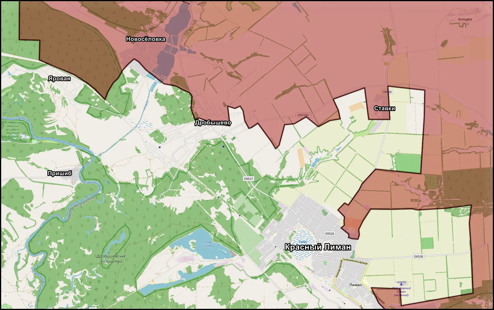
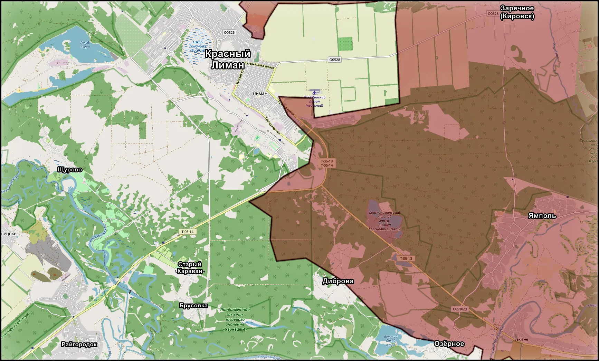
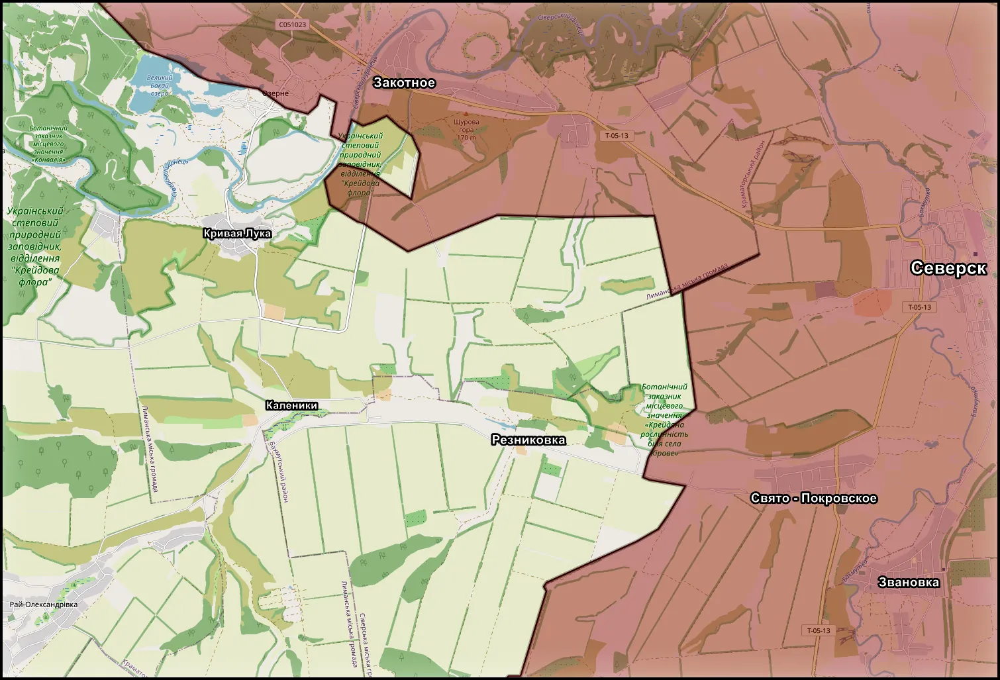
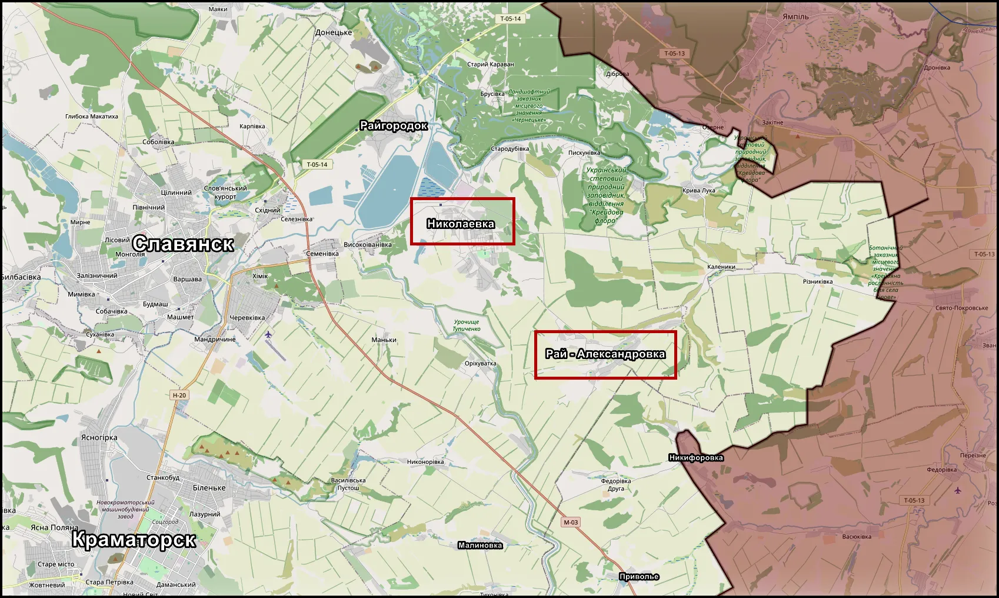

Красный Лиман - Славянск: стратегическая конфигурация весна-лето 2026
Дата:

На северном участке Донбасса складывается единая оперативная картина, где Лиманское и Славянское направления постепенно связываются в одну линию давления. В районе Красного Лимана подразделения 144 мсд 20 ОА при поддержке 2 мд 1 ТА ведут активные действия севернее и северо-западнее города по осям Cвятогорск - Яровая - Дробышево - Ставки. Идут напряженные встречные бои, линия соприкосновения подвижна, однако задача просматривается ясно - расширить контроль и создать условия для ограничения маневра ВСУ. Одновременно удерживаются позиции районе Среднего и Новоселовки, где отражаются контратаки противника, что позволяет не допустить разрыва фронта на вспомогательных участках.

Восточнее и юго-восточнее Лимана развивается отдельное направление давления. Подразделения 25 ОА продвигаются от рубежа Диброва - Озерное, действуя малыми штурмовыми группами в лесных массивах и вдоль дороги на Закотное. Бои постепенно смещаются ближе к Северском Донцу. Таким образом, лиманский узел оказывается под воздействием с нескольких направлений, что усложняет оборону и вынуждает противника распределять резервы.

На Славянском направлении 3 ОА наращивает плотность действий вдоль правого берега Северского Донца. География участка между рекой и трассой Славянск - Бахмут объективно способствует концентрации российских сил на более узкой полосе. Продолжаются бои в районах Закотного, Резниковки, Кривой Луки и Каленников, а в южной части полосы фиксируется продвижение в районе Новомарково, Миньковки и на линии Никифоровка - Приволье. Постепенно формируются позиции, позволяющие оказывать давление на восточные подступы к Славянску.

В целом текущая конфигурация указывает на последовательный и системный подход. Продвижение носит умеренный, но устойчивый характер, с одновременным укреплением занятых рубежей и повышением плотности сил на ключевых участках. Весна 2026 года становится этапом формирования исходных позиций. Дальнейшая динамика будет зависеть от способности удержать темп, стабилизировать фланги и обеспечить устойчивость тыла. Север Донбасса постепенно превращается в главный узел кампании, где именно сейчас закладываются условия для развития событий в летний период.